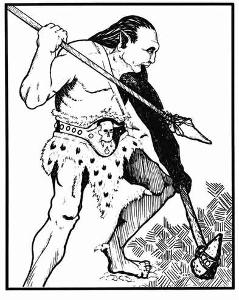

食人魔 · Ogre
 |
|
食人魔几乎能出现在任何地形，包括地下。他们脾气暴躁、贪食并热衷财宝，有时为兽人部落或邪恶牧师充当雇佣兵，也会与豺狼人联手劫掠；他们和巨魔、某些巨人混居，偶尔还会被恶魔奴役。
若遭遇 11 名或更多食人魔，其中一名为领袖（护甲等级 3、30–33 点生命值，按 7 骰生物攻击，每次造成 2–12 点伤害）；若有 16 名或更多，则另有两名领袖及一名酋长（护甲等级 4、34–37 点生命值，按 7 骰生物攻击，每次造成 4–14 点伤害）。若按武器类型决定伤害，食人魔与领袖均额外获得 +2 点伤害，酋长再额外获得 +1 点。
巢穴中有 2–12 名雌性，按普通食人魔战斗但每骰最多 6 点生命值、每次造成 2–8 点伤害；另有 2–8 名幼体，按地精战斗。食人魔会俘虏生物作为奴隶（25%）或食物（75%），因此巢穴有 30% 的机会包含 2–8 名奴隶／俘虏；但他们偏爱半身人、矮人和精灵的肉，这些生物在巢穴中存活的机会只有 10%。食人魔说自己的语言，也会说混乱邪恶阵营语、兽人语、巨魔语和石巨人语。